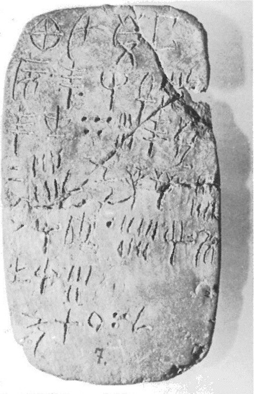
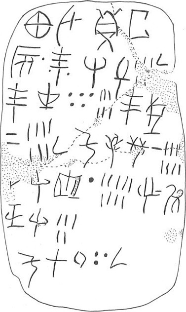

-
HT13
Names
Aliases for the inscription.
HT13, HT 13
Support
Type of Object.
Tablet
Location
Site where object was found.
Haghia Triada
Findspot
Location at Site.
Villa Magazine


# "Row Index", "Line Index", "Word Index", "Syllabogram", "Status of Reading"
# R L W I S
# 1 0 1 PA certain
1 1 0 KA certain
1 1 0 U certain
1 1 0 DE certain
1 1 0 TA certain
2 1 1 VIN certain
2 1 2 *900 certain
2 1 3 TE certain
2 1 4 *900 certain
2 2 5 RE certain
2 2 5 ZA certain
2 2 6 5 certain
2 2 7 ¹⁄₂ certain
3 3 8 TE certain
3 3 8 TU certain
3 3 9 50 certain
3 3 9 6 certain
3 4 10 TE certain
3 4 10 KI certain
4 4 11 20 certain
4 4 11 7 certain
4 4 12 ¹⁄₂ certain
4 5 13 KU certain
4 5 13 ZU certain
4 5 13 NI certain
4 5 14 10 certain
4 5 14 8 certain
5 6 15 DA doubtful
5 6 15 SI certain
5 6 15 *118 certain
5 6 16 10 certain
5 6 16 9 certain
5 7 17 I certain
5 7 17 DU certain
6 7 17 NE certain
6 7 17 SI certain
6 7 18 5 certain
7 8 19 KU certain
7 8 19 RO certain
7 8 20 100 certain
7 8 20 30 certain
7 8 21 ¹⁄₂ certain
Scribe
Writer of Inscription.
HT Scribe 8
Context
Approximate Date of Inscription.
Late Minoan IB
1500-1450 BCE
Dimensions
Height x Length x Thickness.
40.5
6.1O
0.80
cm
GORILA OCR
Catalogue
Museum Reference Number.
HM7
Hiraklion Museum
Readings
Linear A Transcription
A Linear A transcription with words parsed separately.
Line breaks match the inscription.
𐘾𐘉𐘦𐘳
𐙍𐄁𐘃𐄁𐘙𐘍𐄋𐝆
𐘃𐘹𐄔𐄌𐘃𐘸
𐄑𐄍𐝆𐙂𐙀𐘝𐄐𐄎
𐘀𐘤𐙈𐄐𐄏𐘚𐘬
𐘗𐘤𐄋
𐙂𐘁𐄙𐄒𐝆
ASCII Transcription
An ASCII transcription with words parsed separately.
Line breaks match the inscription.
KAUDETA
VIN*900TE*900REZA5¹⁄₂
TETU506TEKI
207¹⁄₂KUZUNI108
DASI*118109IDU
NESI5
KURO10030¹⁄₂
Linear A Tabulation
A Linear A transcription with words parsed separately.
Line breaks are logical, e.g. to represent a list.
𐘾𐘉𐘦𐘳𐙍𐄁𐘃𐄁
𐘙𐘍𐄋𐝆
𐘃𐘹𐄔𐄌
𐘃𐘸𐄑𐄍𐝆
𐙂𐙀𐘝𐄐𐄎
𐘀𐘤𐙈𐄐𐄏
𐘚𐘬𐘗𐘤𐄋
𐙂𐘁𐄙𐄒𐝆
ASCII Tabulation
An ASCII transcription with words parsed separately.
Line breaks are logical, e.g. to represent a list.
KAUDETAVIN*900TE*900
REZA5¹⁄₂
TETU506
TEKI207¹⁄₂
KUZUNI108
DASI*118109
IDUNESI5
KURO10030¹⁄₂
Commentaries
HT 13
, page tablet (HM 7) (GORILA I: 26-27)
Schoep 2002, type III (single commodity)
HT Scribe
8
|
side.line
|
statement
|
logogram
|
number
|
fraction
|
|
.1-2
|
KA-U-DE-TA
|
VINa • TE •
|
|
|
|
.2
|
RE-ZA
|
|
5[ ]
|
J[
]
|
|
.3
|
TE-TU
|
|
56
|
|
|
.3-4
|
TE-KI
|
|
27
|
J
|
|
.4
|
KU-ZU-NI
|
|
18
|
|
|
.5
|
DA
-SI-*118
|
|
19
|
|
|
.5-6
|
I-DU-NE-SI
|
|
5
|
|
|
.7
|
KU-RO
|
|
130
|
J
|
KU-RO here
records 130.5, but the numbers total 131.
Commentary © John Younger
References
papers/GORILA-Vol1.pdf#page=62